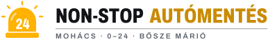
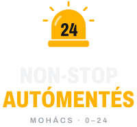
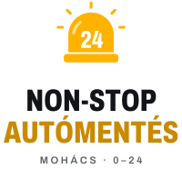
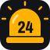
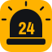
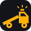

01 · Fő logó
Fekvő változat
Sötét háttér – weboldal, autóoldal, munkaruha

Világos háttér – számla, névjegy, nyomtatvány
02 · Álló változat
Négyzetes felületekre

Matrica, plakát, hátul a mentőn

Szórólap, névjegy hátoldala
03 · Jel
Profilkép, ikon, favicon


Facebook-profilkép: a sötét, lekerekített négyzet. Egyszínű (fólia, gravírozás): a borostyán alapú negatív változat.
04 · Színek és betű
Egy kiemelőszín, sok sötét
Villogó #FFB200
Aszfalt #121418
Fényvisszaverő #F2F3F5
Borostyán nyomdai #C98A00
Felirat: Archivo, szűkített, extra félkövér. A logó feliratai görbére vannak alakítva, betűtípus nélkül is pontosan jelennek meg.
05 · Elvetett irányok
Amit még kipróbáltam

Plató
Billenő platós mentő sziluettje. Egyértelmű, de kis méretben a részletek elvesznek.
Horgos M
Mohács „M”-je vontatóhoroggal. Egyedi, de nem mondja meg elsőre, hogy autómentés.